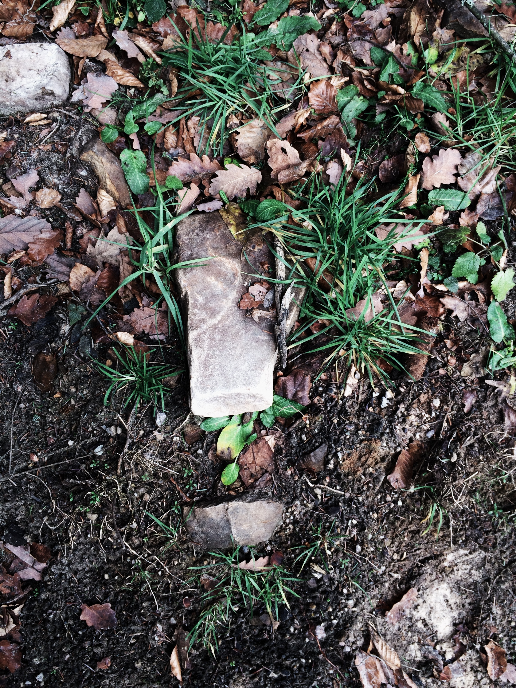

Connecting Gardeners with those that have compost
Basic Info
The goal of Compost Finder is to connect gardeners, who need trash for their compost bins, with people who want to donate their trash. Essentially, one person's trash is another person's gold
